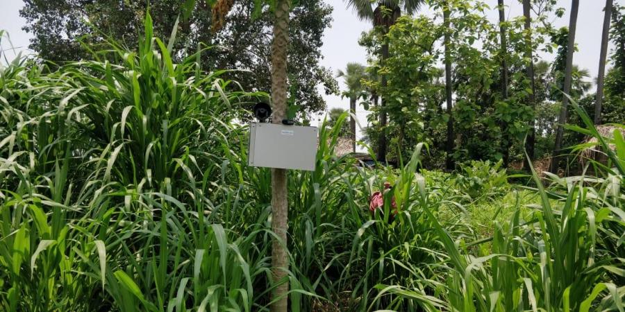

PATNA: At a time when Bihar farmers are increasingly losing crops to animal invasion and thefts, an IITian’s startup may hold key to tackling both. IIT-Kharagpur alumnus Ajit Kumar has developed an artificial intelligence-driven Farm Surveillance-Cum-Animal Scarer (FSCAS), which is helping farmers to keep animals at bay and thieves away.
Based on Artificial Intelligence (AI), the FSASD is a computerized electronic sensor device, which monitors the farms and agricultural field using day-and-night camera and AI-based algorithms running on the device continuously.
Kumar says the gadget can be installed at key locations on the field. The moment it spots an animal or theft, it starts blaring, besides sending alert to the mobile handsets of the farmers. The device is artificial intelligence-driven and has computerised sensors. It also is equipped with night-vision cameras.
A resident of Shyampur in Bhagalpur, Ajit Kumar quit his job at an MNC to come up with the farmer-friendly start-up idea named Stepupify. The gadget was developed in association with his batchmate Sagar Kumar.
“This device is battery powered and can be mounted on a pole or tree in the field along with installed solar panels to charge the battery. It can be customised as per farmers’ request and has been tested in the fields at Khirighat (Antichak) in Kahalgaon sub-division,” Kumar said. As of now, the contraption costs Rs 15,000.
The gadget’s credibility is vouched for by many farmers in Lalapur, Bhader and Kahalgaon. “The sensor immediately identifies any attempt to intrude into the field. We may add more sensors in future to bolster surveillance,” Kumar says. Kumar’s Stepupify Labs also imparts training to youths in robotics, STEM and in preparation for JEE (Main and advance) with the support of Kumar’s wife Alka.
In 2020, Kumar says, through his village-based labs, he developed a UVC Sanitizer Robot for Covid sanitisation and that was tested and tried by the Indian Railways.